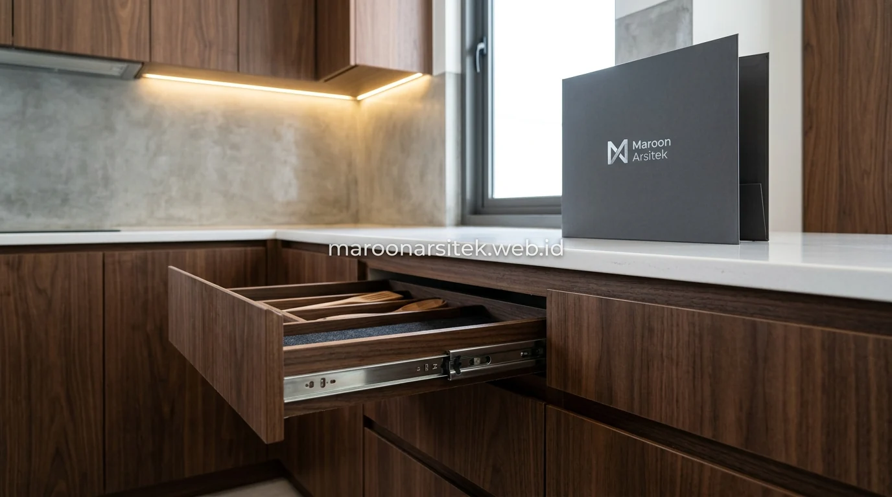

Banyak pemilik hunian di kawasan Jabodetabek merasa kecewa ketika hasil interior kustom yang awalnya terlihat cantik dari foto, ternyata memiliki banyak cacat minor saat digunakan sehari-hari: celah pintu lemari yang miring, laci yang seret dan berdecit, hingga lapisan HPL yang mengelupas di bagian tepi hanya dalam hitungan bulan. Kualitas sejati dari sebuah karya interior terletak pada presisi millimeter dan kehalusan detail yang tahan uji waktu. Melalui layanan jasa desain interior dari Maroon Arsitek, setiap kabinet, kitchen set, dan wardrobe dibuat dengan standar manufaktur modern yang bergaransi resmi.
Standar Kerapian Celah dan Sambungan Furniture Built-In
Kerapian furnitur tanam (*built-in*) ditentukan oleh disiplin toleransi celah sambungan:
- Celah Seragam & Rapat: Sambungan antar panel kabinet dipotong menggunakan mesin panel saw presisi dengan toleransi celah di bawah 1 mm, menghasilkan garis bayangan (*shadow line*) yang rapi dan elegan.
- Struktur Rangka Multipleks Pilihan: Menggunakan multipleks / plywood berkualitas dengan ketebalan 15–18 mm yang padat dan tahan lembap, bukan particle board atau MDF murah yang mudah melengkung terkena uap air.
- Hardware Tersembunyi: Pemasangan minifix dan dowel kayu yang rapi tanpa menampakkan kepala sekrup kasar di permukaan luar lemari.
Penyesuaian Ukuran terhadap Kondisi Dinding yang Tidak Rata
Kondisi plesteran dinding rumah eksisting yang tidak sepenuhnya vertikal atau siku 90 derajat diatasi melalui teknik pemasangan berpengalaman:
- Tim teknis melakukan pengukuran detail di berbagai titik ketinggian sebelum modul kabinet difabrikasi di workshop.
- Penggunaan panel *filler* samping yang diserut manual secara presisi mengikuti kontur gelombang dinding, sehingga kabinet menempel rapat tanpa rongga debu.
- Aplikasi sealant silikon sewarna HPL pada celah batas dinding untuk menciptakan tampilan akhir yang mulus dan kedap serangga.

Fungsi Mekanisme Laci dan Pintu Furniture yang Lancar
Kenyamanan interaksi harian bertumpu pada kehalusan gerak rel dan engsel:
- Sistem Rel Undermount Soft-Close: Rel dipasang di bawah laci (*concealed runners*) sehingga tidak terlihat dari samping, mampu menahan beban berat tanpa anjlok, dan menutup perlahan tanpa bantingan keras.
- Engsel Sendok Slow-Motion: Engsel berlapis nikel antikarat dengan penyetel 3 arah (*3D adjustment*) untuk memastikan kerataan daun pintu kabinet tetap sempurna.
- Uji Coba Buka-Tutup Berlapis: Seluruh pintu dan laci diuji gerak buka-tutup berulang kali sebelum proses serah terima proyek dilakukan.
Pemilihan Hardware sesuai Beban dan Frekuensi Penggunaan
Spesifikasi hardware disesuaikan secara khusus menurut fungsi ruangan:
- Kitchen Set & Rak Bumbu: Menggunakan rel laci heavy-duty berdaya tampung hingga 30–50 kg untuk menampung tumpukan piring keramik dan peralatan masak berat.
- Wardrobe & Walk-in Closet: Dilengkapi gantungan baju berkekuatan tinggi serta laci aksesoris bersekat beludru dengan rel push-to-open modern.
Kualitas Pemasangan HPL dan Finishing Permukaan Furniture
Teknik pelapisan HPL menentukan daya tahan furniture hingga belasan tahun ke depan:
- Pengeleman Merata Bertekanan: Menggunakan lem kontak mutu premium yang diaplikasikan tipis merata pada kedua permukaan dan dipress kuat untuk mencegah gelembung udara (*blistering*).
- Permukaan Halus Bebas Gelombang: Menghaluskan permukaan dasar multipleks dengan amplas mesin sebelum penempelan HPL tekstur matte maupun glossy.
Penanganan Sudut dan Tepi agar Tidak Mudah Terkelupas
Menjaga sudut kabinet tetap aman dan tahan benturan:
- Mengaplikasikan Edging PVC tebal 1–2 mm pada semua sisi tepi pintu dan meja menggunakan mesin edge-banding otomatis, sehingga ujung sudut tidak tajam dan tidak mudah cuil.
- Sudut sambungan HPL difinishing dengan pisau trimmer khusus dan dihaluskan manual agar bebas dari guratan hitam bekas lem yang kotor.